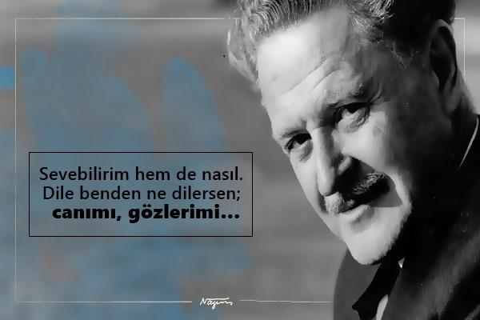

NAZIM HİKMET KİMDİR?
Nâzım Hikmet Ran ya da kısaca Nâzım Hikmet (15 Ocak 1902 – 3 Haziran 1963), Türk şair, oyun yazarı, romancı ve anı yazarı. "Romantik komünist" ve "romantik devrimci" olarak tanımlanır. Siyasi düşünceleri yüzünden defalarca tutuklanmış ve yetişkin yaşamının büyük bölümünü hapiste ya da sürgünde geçirmiştir. Şiirleri elliden fazla dile çevrilmiş ve eserleri birçok ödül almıştır.
Yasaklı olduğu yıllarda Orhan Selim, Ahmet Oğuz, Mümtaz Osman ve Ercüment Er adlarını da kullanmıştır. İt Ürür Kervan Yürür kitabı Orhan Selim imzasıyla çıkmıştır. Türkiye'de serbest nazımın ilk uygulayıcısı ve çağdaş Türk şiirinin en önemli isimlerindendir. Uluslararası bir üne ulaşmıştır ve dünyada 20. yüzyılın en gözde şairleri arasında gösterilmektedir.
Şiirleri yasaklanan ve yaşamı boyunca yazdıkları yüzünden 11 ayrı davadan yargılanan Nazım Hikmet, İstanbul, Ankara, Çankırı ve Bursa cezaevlerinde 12 yılı aşkın süre yattı. 1951 yılında Türk vatandaşlığından çıkarıldı; ölümünden 46 yıl sonra, 5 Ocak 2009 tarihli Bakanlar Kurulu kararı ile bu işlem iptal edildi. Mezarı Moskova'da bulunmaktadır.
İlk şiiri Feryad-ı Vatanı 3 Temmuz 1913'te yazdı. Aynı yıl Mekteb-i Sultani'de ortaokula başladı. Bir aile toplantısında denizciler için yazdığı bir kahramanlık şiirini Bahriye Nazırı Cemal Paşa'ya okuyunca çocuğun Bahriye Mektebine gitmesine karar verildi. 25 Eylül 1915'te Heybeliada Bahriye Mektebi'ne girdi, 1918'de 26 kişi içinden 8. olarak mezun oldu. Karne değerlendirmelerinde zeki, orta derecede çalışkan, elbisesine özen göstermeyen, sinirli ve ahlakî tavırları iyi bir öğrenci görülmektedir. Mezun olduğunda dönemin okul gemisi Hamidiye gemisine güverte stajyer subayı olarak atandı. 17 Mayıs 1921'de aşırıya kaçan halleri bulunduğundan ordu ile ilişiği kesildi.
Nazım Hikmet, 1920'de arkadaşı Vâlâ Nureddin ile Milli Mücadele'ye katılmak üzere ailesinden habersiz Anadolu'ya geçti, Bolu'da öğretmenlik yaptı. Daha sonra Batum üzerinden Moskova'ya giderek Doğu Emekçileri Komünist Üniversitesi’nde siyasal bilimler ve iktisat okudu. 1921'de gittiği Moskova’da devrimin ilk yıllarına tanık oldu ve komünizm ile tanıştı. 1924'te Moskova'da yayınlanan ilk şiir kitabı 28 Kanunisani sahnelendi. O yıl Türkiye'ye dönerek Aydınlık Dergisinde çalışmaya başladı, ancak dergide yayınlanan şiir ve yazılarından dolayı on beş yıl hapsi istenince tekrar Sovyetler Birliği'ne gitti. 1928’de Af Kanunundan yararlandı ve Türkiye'ye döndü. Bu defa Resimli Ay dergisinde çalışmaya başladı. 1938'de yirmi sekiz yıl hapis cezasına çarptırıldı. 12 sene tutuklu kaldı. Barışseverler Cemiyeti'nin kuruluşunda yer aldı. 12 sene süren tutukluluktan sonra askere alınacağı ve öldürüleceği endişesiyle 1950 yılında Stalin yönetimindeki Sovyetler Birliği'ne giden Nazım, 25 Temmuz 1951 tarihinde Bakanlar Kurulunca Türk vatandaşlığından çıkarılmasının ardından, büyük dedesi Mustafa Celaleddin Paşa (Konstantin Borzecki)'nın memleketi olan Polonya'nın vatandaşlığına geçerek Borzecki soyadını aldı. 3 Haziran 1963 tarihinde ise, Nâzım Hikmet geçirdiği bir kalp krizi neticesinde 61 yaşında hayata gözlerini yumdu.
Babası, Matbuat Umum müdürlüğü ve Hamburg Şehbenderliği yapmış olan Hikmet Bey, annesi Ayşe Celile Hanım'dır. Celile Hanım piyano çalan, resim yapan, Fransızca bilen bir kadındır. Celile Hanım, bir dilci ve eğitimci de olan Hasan Enver Paşa'nın kızıdır. Hasan Enver Paşa, Polonya'dan 1848 Ayaklanmaları sırasında Osmanlı İmparatorluğu'na göç eden ve Osmanlı vatandaşı olunca Mustafa Celalettin Paşa adını alan Konstantin Borzecki'nin (Lehçe: Konstanty Borzęcki, d. 1826 - ö. 1876) oğludur. Mustafa Celaleddin Paşa Osmanlı Ordusu'nda subay olarak görev yapmış ve Türk tarihi üzerine önemli bir eser olan "Les Turcs anciens et modernes" (Eski ve yeni Türkler) kitabını yazmıştır. Celile Hanım'ın annesi ise Alman kökenli Osmanlı generali Mehmet Ali Paşa'nın yani Ludwig Karl Friedrich Detroit'in kızı olan Leyla Hanım'dır. Celile Hanım'ın kız kardeşi Münevver Hanım, şair Oktay Rifat'ın annesidir.
Nâzım Hikmet'e göre, babası Türk ve annesi ise Alman, Polonyalı, Gürcü, Çerkez ve Fransız kökenli idi. Babası Hikmet Bey, Çerkes Nâzım Paşa'nın oğludur. Annesi Ayşe Celile Hanım, 3/8 Çerkes, 2/8 Leh, 1/8 Sırp, 1/8 Alman, 1/8 Fransız (Huguenot) kökenliydi.
Babası Hikmet Bey, Selanik'te, Hariciye Nezareti'nde (Dışişleri Bakanlığı) çalışan bir memurdur. Diyarbakır, Halep, Konya ve Sivas valilikleri yapmış olan Nâzım Paşa'nın oğludur. Mevlevi tarikatından olan Nâzım Paşa aynı zamanda bir özgürlükçüdür. Kendisi Selanik'in son valisidir. Hikmet Bey henüz Nâzım'ın çocukluğunda memuriyetten ayrılır ve ailece Halep'e, Nâzım'ın dedesinin yanına giderler. Orada yeni bir iş ve hayat kurmaya çalışırlar. Başarısız olunca İstanbul'a gelirler. Hikmet Bey'in İstanbul'daki iş kurma denemeleri de iflasla neticelenir ve hiç hoşlanmadığı memuriyet hayatına geri döner. Fransızca bildiği için yeniden Hariciye'ye atanır.

İlk şiirlerini hece ölçüsü ile yazmaya başladı ancak içerik bakımından diğer hececilerden farklıydı. Şiirsel gelişimi arttıkça hece ölçüsü ile yetinmemeye ve şiiri için yeni formlar aramaya başladı. Sovyetler Birliği'nde yaşadığı ilk yıllar olan 1922 ile 1925 arasında bu arayış doruğa çıktı. Hem içerik hem de biçim bakımından dönemindeki şairlerden farklıydı. Hece ölçüsünden ayrılarak Türkçenin vokal özellikleri ile ahenk oluşturan serbest ölçüyü benimsedi. Mayakovski ve fütürizm taraftarı genç Sovyet şairlerinden esinlendi.
« "Dörtnala gelip Uzak Asya'dan
Akdeniz'e bir kısrak başı gibi uzanan bu memleket, bizim.
Bilekler kan içinde, dişler kenetli, ayaklar çıplak
Ve ipek bir halıya benzeyen toprak bu cehennem, bu cennet bizim. Kapansın el kapıları, bir daha açılmasın,
Yok edin insanın insana kulluğunu, bu dâvet bizim....Yaşamak bir ağaç gibi tek ve hür ve bir orman gibi kardeşçesine,
bu hasret bizim..." »
(Nazım Hikmet)Şiirlerinden birçoğu Fikret Kızılok, Cem Karaca, Fuat Saka, Grup Yorum, Ezginin Günlüğü, Zülfü Livaneli gibi sanatçılar ve gruplar tarafından bestelendi. Ünol Büyükgönenç tarafından özgün bir şekilde yorumlanmış olan küçük bir kısmı ise 1979'da "Güzel Günler Göreceğiz" ismiyle kaset olarak çıktı. Birkaç şiiri ise Yunan besteci Manos Loizos tarafından bestelendi. Ayrıca bazı şiirleri Yeni Türkü'nün eski üyesi Selim Atakan tarafından da bestelenmiştir. "Salkım söğüt" adlı şiiri Ethem Onur Bilgiç'in 2014 tarihli animasyon filmine konu olmuştur.
UNESCO'nun ilan ettiği 2002 Nâzım Hikmet yılı için besteci Suat Özönder "Şarkılarda Nâzım Hikmet" adlı bir albüm hazırladı. Türkiye Cumhuriyeti Kültür Bakanlığının katkılarıyla, Yeni Dünya plak şirketi tarafından hayata geçirildi.
1925 yılından başlamak üzere şiirleri ve yazıları yüzünden birçok kere yargılandı. 1938 yılında orduyu ayaklanmaya kışkırtmaya çalıştığı gerekçesiyle 28 yıl dört ay hapis cezasına çarptırıldı. İstanbul, Ankara, Çankırı ve Bursa cezaevlerinde 12 yılı aşkın kaldı. Bursa cezaevinde kaldığı yılları anlatan Mavi Gözlü Dev adlı film 2007 yılında vizyona girmiştir. 1950 yılında bir af yasasıyla salıverildi. Ancak sürekli izlendiği ve çürüğe ayrıldığı halde 48 yaşında yeniden askerlik yapmaya çağrılması ve öldürüleceği yolundaki duyumlar üzerine yurtdışına kaçtı. 17 Haziran 1951 tarihinde Bakanlar Kurulu tarafından Türk vatandaşlığından çıkarılmasına karar verildi. Sovyetler Birliği'nde Moskova yakınlarındaki yazarlar köyünde ve daha sonra da eşi Vera Tulyakova (Hikmet) ile Moskova'da yaşadı. Memleket dışında geçirdiği yıllarda Bulgaristan, Macaristan, Fransa, Küba, Mısır gibi Dünya memleketlerini dolaştı, buralarda konferanslar düzenledi, savaş ve emperyalizm karşıtı eylemlere katıldı, radyo programları yaptı. Budapeşte Radyosu ve Bizim Radyo bunlardan bazılarıdır. Bu konuşmaların bir kısmı bugüne ulaşmıştır.
DAVALARI
1925 Ankara İstiklâl Mahkemesi Davası
1927-1928 İstanbul Ağır Ceza Mahkemesi Davası
1928 Rize Ağır Ceza Mahkemesi Davası
1928 Ankara Ağır Ceza Mahkemesi Davası
1931 İstanbul İkinci Asliye Ceza Mahkemesi Davası
1933 İstanbul Ağır Ceza Mahkemesi Davası
1933 İstanbul Üçüncü Asliye Ceza Mahkemesi Davası
1933-1934 Bursa Ağır Ceza Mahkemesi Davası
1936-1937 İstanbul Ağır Ceza Mahkemesi Davası
1938 Harp Okulu Komutanlığı Askerî Mahkemesi Davası
1938 Donanma Komutanlığı Askerî Mahkemesi DavasıÖLÜMÜ VE SONRASI
3 Haziran 1963 sabahı saat 06:30'da gazetesini almak üzere ikinci kattaki dairesinden apartman kapısına yürümüş ve tam gazetesine uzanırken geçirdiği kalp krizi sonucunda ölmüştür. Ölümü üzerine Sovyet Yazarlar Birliği salonunda yapılan törene yerli yabancı yüzlerce sanatçı iştirak etmiş ve tören siyah beyaz olarak kaydedilmiştir. Ünlü Novodeviçi Mezarlığı'nda gömülüdür. Mezar taşı siyah bir granitten olup meşhur şiirlerinden biri olan rüzgâra karşı yürüyen adam figürü taş üzerinde ebedileştirilmiştir.
Şair Nâzım Hikmet'in 2008 yılının ilk günlerinde, eşi Piraye'nin torunu Kenan Bengü tarafından Piraye'nin evrakları arasında “Dört Güvercin” adında bir şiiri ve üç adet tamamlanmamış roman taslağı bulundu.
YENİDEN TÜRK VATANDAŞLIĞINA ALINMASI
2006 yılında Bakanlar Kurulunun Türk vatandaşlığından çıkarılmalar ile ilgili yeni bir düzenleme yapması gündeme geldi. Yıllardır tartışılmakta olan Nâzım Hikmet'in Türk vatandaşlığına yeniden kabul edilmesi yolu açılmış gibi gözükmesine rağmen Bakanlar Kurulu bu düzenlemenin sadece yaşamakta olanlar kişiler için düzenlendiğini ve Nâzım Hikmet'i kapsamadığını belirterek bu yöndeki talepleri reddetti. Dönemin İçişleri Bakanı Abdülkadir Aksu, İçişleri Komisyonu'nda "Tasarıda, şahsa bağlı hak olduğu için bizzat müracaat etmesi gerekir. Arkadaşlarım da olumlu şeyler belirttiler, komisyonda görüşülür, bir karar verilir" dedi.
2009 yılının 5 Ocak Günü "Nâzım Hikmet Ran'ın Türkiye Cumhuriyeti vatandaşlığından çıkartılmasına ilişkin Bakanlar Kurulu kararının yürürlükten kaldırılmasına ilişkin önerge" Bakanlar Kurulu'nda imzaya açıldı. Nâzım Hikmet Ran'a yeniden Türkiye Cumhuriyeti vatandaşlığının iade edilmesine ilişkin bir kararname hazırladıklarını ve bu teklifin imzaya açıldığını ifade eden Hükümet Sözcüsü Cemil Çiçek, 1951 yılında vatandaşlıktan çıkartılan Ran'ın yeniden Türk vatandaşı olmasına ilişkin önerinin Bakanlar Kurulu'nca oylanarak kabul edildiğini söyledi.
Bakanlar Kurulu'nun 05.01.2009 tarihinde aldığı bu karar, 10.01.2009 tarihinde Resmî Gazete'de yayınlandı ve Nâzım Hikmet Ran, 58 yıl sonra yeniden Türk vatandaşı oldu.
